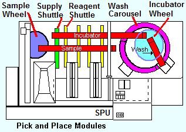
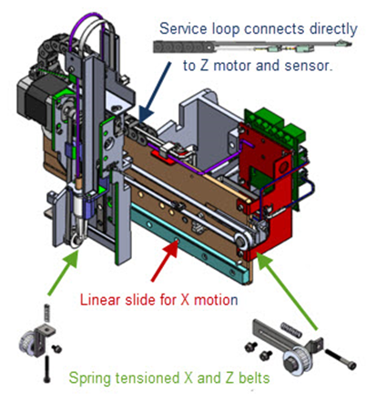
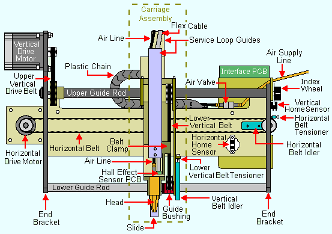
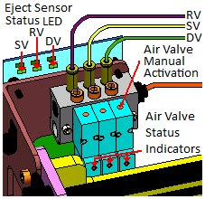
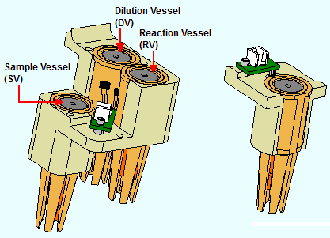
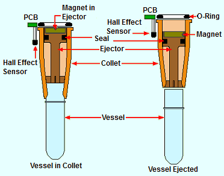
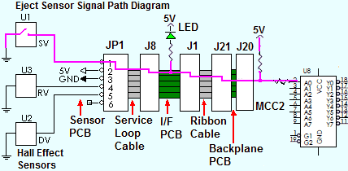

Pick-and-Place Operating Principles
Purpose
This document provides operational details and drawings for the three pick-and-place modules in the Unicel DxI.
Module Location

Pick-and-Place Vessel Transfer Operations
This section identifies how each pick-and-place transfers a vessel.
- Sample pick-and-place (SV head)
- Supply shuttle to sample wheel
- Supply shuttle to reagent shuttles (diagnostic operations)
- Sample wheel to reagent shuttles
- Reagent shuttles to sample wheel
- Reagent shuttles to waste
- Sample wheel to waste
- Sample pick-and-place (RV and DV heads)
- Supply shuttle to reagent shuttles
Note: The sample pick-and-place does not confirm vessel removal when transferring a vessel to the waste. The pick-and-place can crash on a vessel that fails to be picked up and removed.
- Incubator pick-and-place (RV head)
- Reagent shuttles to incubator wheel
- Incubator wheel to waste
- Incubator wheel to reagent shuttles (two-step assay)
- Reagent shuttles to wash carousel (for utility assay probe wash or priming)
- Wash carousel to waste (after prime or during initialization)
Note: The incubator pick-and-place always confirms vessel transfer to the waste by returning to check the pickup location. A failed transfer from any location stops the system and creates an event.
- Wash pick-and-place (RV head)
- Incubator wheel to wash carousel.
- Wash carousel to incubator wheel.
Note: The wash pick-and-place always confirms vessel transfer. A failed transfer stops the system and creates an event.
Operational Overview
- The pick-and-place carriage is positioned horizontally with the head over the vessel to be picked up (X-alignment).
- The pick-and-place carriage is moved down so that the collet captures the vessel (Z-alignment).
- The vessel pushes the ejector piston up as it enters the collet and the eject sensor confirms that a vessel is in the collet.
- The pick-and-place carriage moves upward to the Z-home position picking up the vessel.
- The pick-and-place carriage moves horizontally to align the collet over the vessel placement location on the intersecting device.
- The collet with a vessel is moved down to place the vessel into the placement location.
Note: The placement height is slightly lower than the pickup height to ensure there is contact between the vessel and the placement surface and reduce splashing when the vessel is ejected.
- The ejector air valve is actuated to apply pressure to the ejector piston and hold the vessel against the placement surface.
- The eject sensor confirms that the piston did not move down to the eject position and that the vessel was not left at the pickup location or lost during the transfer.
- Air pressure is maintained while the pick-and-place carriage moves upward to its home position. The vessel remains stationary in the placement location as the collet is lifted.
- After the pick-and-place head has lifted, the eject sensor confirms that the piston is in the fully extended position, indicating that the vessel has been ejected into the placement location correctly.
Online Dilutions
- The sample pick-and-place picks up a sample vessel (SV) from the sample storage wheel.
- The sample pick-and-place simultaneously picks up two empty vessels from the supply carriage.
- The sample pick-and-place delivers the two empty vessels to the reagent carriage, placing them into the dilution vessel (DV) position (rear position) and reaction vessel (RV) position (third position from the front).
- The SV containing patient sample is delivered to one of the front two vessel positions of the reagent carriage.
- The reagent pipettor transfers sample from the SV into the DV where the reagent pipettor dilutes the sample with wash buffer.
- After the dilution, the reagent pipettor transfers reagents to the RV and then transfers diluted sample from the DV into the RV.
- When pipetting is complete, the reagent carriage moves to the back of the instrument where the DV is ejected from the side of the carriage into a waste chute.
- The incubator pick-and-place transports the RV from the reagent carriage to the incubator wheel.
- The sample pick-and-place can provide more RVs and DVs as needed until all tests have been pipetted from the SV. Then the sample pick-and-place can move the SV to the waste or back to the sample wheel to wait for a possible reflex test to be ordered.
Component Locations
Use this drawing to identify names and locations of the wash pick-and-place components. The sample and incubator pick-and-place modules are similar.
All X Axis linear slide Pick and Places performs the same as the previous module versions, but feature a few re-engineered components.



Pick-and-Place Heads
The sample pick-and-place module contains three heads. The incubator pick-and-place and wash pick-and-place modules contain a single head.
- SV (sample vessel) head:
- Located on the left side and below the other two heads. This location permits the head to pick and place vessels on the sample storage wheel, whereas the upper two heads run into the other sample vessels.
- The upper two heads must be vacant while the SV head is accessing the storage wheel.
- RV (reaction vessel) head:
- Only accesses the supply and reagent carriages.
- Moves empty vessels from the supply carriage to the third vessel position of the reagent carriages.
- DV (dilution vessel) head:
- Only accesses the supply and reagent carriages.
- Moves empty vessels from the supply carriage to the rear vessel position of the Reagent Carriages. These vessels are used for sample dilutions.
- Occupied only during tests that require online sample dilution.
Pick-and-Place Eject Sensor
Use this drawing to identify the pick and place collet / ejector components and how the hall effect Eject Sensor is used to detect the presence of a vessel in the collet.

- Vessel is not present: Ejector down >> Magnet at sensor >> 5 V signal grounded by sensor >> PCB indicator LED is on >> 5 V at MCC2 is grounded >> Eject indicator in user interface is on.
- Vessel is present: Ejector up >> Magnet not at sensor >> 5 V signal not grounded >> PCB indicator LED is off >> 5 V present at MCC2 >> Eject indicator in user interface is off.
- MCC backplane connector J20 to (J21 Sample, J22 Incubator, J23 Wash Pick-and-place)
- Ribbon cable
- Pick-and-place Interface PCB J1 to J8
- Service loop cable
- Single- or triple-head sensor PCB JP1
The sensor grounds the ejector signal when the ejector magnet is near the sensor in the eject position.

Components
| Component | Description and Function |
|---|---|
| X Axis Linear Slide
|
The X Axis linear slide replaces the guide rods that supported the pick and place movement. |
| Spring Tensioning Idler for X and Z belt tensioning
|
The spring tensioned X and Z idler will provide uniform tension for the drive belts. To tension the belt (see picture): 1) Loosen the idler bracket securing screws. 2) Back the tensioning screw off until the screw head separates from the idler bracket. 3) Tighten the securing screw. To remove the belt, perform the same steps, but drive the tensioning screw toward the bracket ( compressing the spring). |
| Cable addition for the Z motion components
|
The Z Axis Service Loop Cable was added for a quick disconnect from the Z components. This can eliminate the need to remove the cabling from the chain during a component change. |


| Component | Description and Function |
|---|---|
| Belt (Upper Z, Lower Z, and X) | Belts transfer motor motion to move the pick-and-place carriage. The three belts are different lengths. |
| Cable, Flex, Service Loop | Provides a signal path from interface PCB to Hall effect sensor PCB. |
| Carriage | Section of pick-and-place module that moves vertically and horizontally to transfer vessels. |
| Chain, Plastic, Guide | Flexible housing for flex cable and air lines that routes to the pick-and-place. This chain provides controlled flexing and protection for the cable and air lines. |
| Clamp, Belt | Attaches the lower Z-belt to the carriage. |
| Collet
|
Collet grips vessels to retain them during transfer.
The collet, when empty, is slightly smaller in diameter than the vessel. To produce a gripping force, the collet expands as it is driven over the vessel. |
| Ejector Piston
|
Ejector piston ejects vessel from collet. Piston pushes the vessel against destination surface while the pick-and-place moves upward leaving the vessel in position. The piston has a magnet, located in the upper position, that triggers a hall effect sensor to verify the position and to detect the presence of a vessel in the collet. |
| Gantry | Gantry refers to the entire pick-and-place module. Gantry is a device that can move both horizontally and vertically to perform its function. |
| Guide, Service Loop | Service loop guide controls the movement of the air supply lines and flex cable as the pick-and-place carriage moves vertically. |
| Head | Pick-and-place housing that includes the collet, eject piston, magnet, and hall effect sensor. |
| Idler (Z- and X-Axis) | Drive belts route around these pulleys that also control the belt tension. |
| Line, Air | Tubing from air valve output to pick-and-place head. |
| Line, Air Supply | Tubing from air supply to air valve input.
Note: Air is supplied by the system air compressor through a low-pressure regulator.
|
| Motor, Horizontal Axis | Provides power for moving the pick-and-place carriage horizontally. |
| Motor, Vertical Axis | Provides power for moving the pick-and-place carriage vertically. |
| PCB, Interface | Contains the input and output connections from this module to the instrument. |
| PCB, Hall Effect Sensor | Contains the hall effect sensor and connects to the interface PCB. |
| Rod, Guide | Round metal shafts that allow horizontal movement of the pick-and-place carriage. |
| Sensors, Home and End-of-Travel | Each pick-and-place module has two sensors:
Sample pick-and-place has a third sensor, toward the right side of the gantry, that confirms the horizontal end-of-travel. |
| Slide, Linear | Type of bearing that allows a low friction linear movement path for a mechanical device. In the pick-and-place module, the carriage is attached to this bearing and provides a vertical path for moving the assembly. |
| Tensioner, Belt | Block and pulley that can be adjusted mechanically to loosen or tighten either the X or Z belt. |
| Valve, Air | Directs air pressure for ejector piston functions. |
Wheel, Index
 |
Notched, flat metal disc that rotates through the Z-home sensor. When the notch passes through the sensor, it indicates to the software that the pick-and-place carriage is at the vertical home position. |